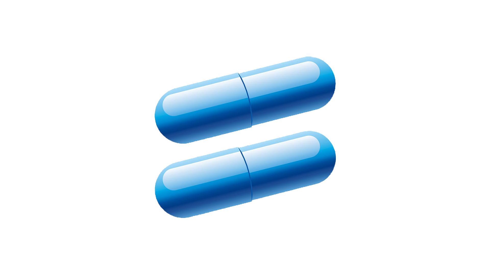

Level 01
Choose the correct option
?The series of reactions in the following image depicts “____________________”

Desalination of water
Origin of Hardness of water
Scum formation in water
Acidification of water
Level 02
Select any 6 ions from the following that make water Hard
?Drag and drop your answers.
Level 03
Drag and drop from the following- various drawbacks of using Hard water.
Level 04
From the tendency of formation of lather on addition of soap, label the following water samples appropriately.
Level 05
Select the methods to that can be used to determine hardness of water.

Level 06
The method used for Determination of hardness of water needs to be reliable and it should give accurate results.
Select the more appropriate method:


Level 07
In EDTA complexometric titration, the burette solution must be a good complexing agent and needs to have proper solubility too.
Select the most suitable chemical as burette solution?


Level 08
Complexometric titrations are usually pH dependent as the complex formation occurs at specific pH only. Select the proper pH range for EDTA-metal complex formation.
Select the proper pH range for EDTA-metal complex formation.
Slider Value: 7
Level 09